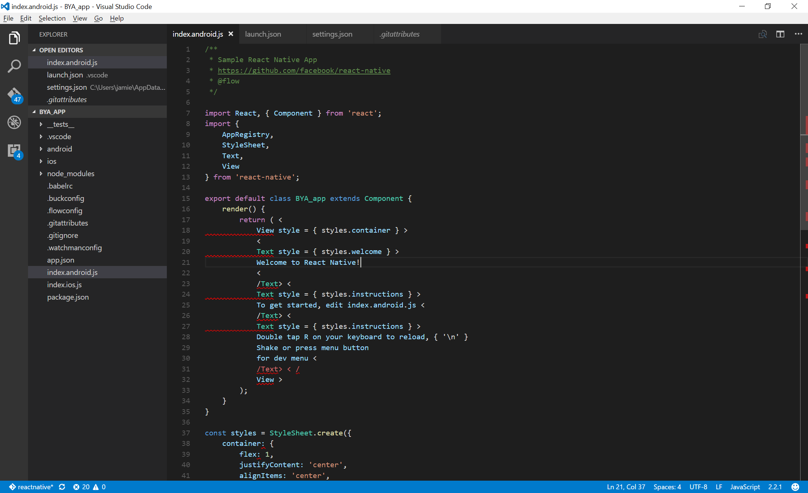
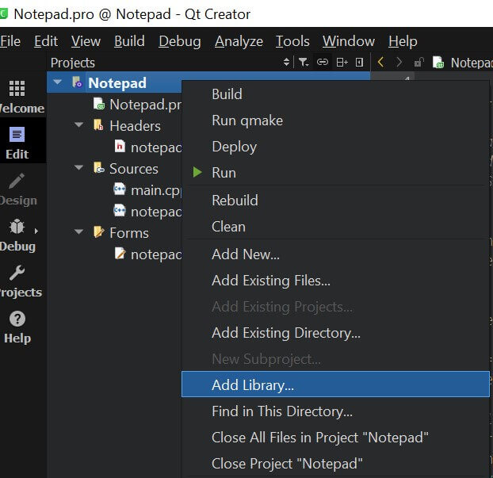

ESXi 的安装与使用
什么是 VMware vSphere
VMware vSphere 是 VMware 的虚拟化平台，可将数据中心转换为包括 CPU、存储和网络资源的聚合计算基础架构。vSphere 将这些基础架构作为一个统一的运行环境进行管理，并为您提供工具来管理加入该环境的数据中心。

VMware vSphere 是 VMware 的虚拟化平台，可将数据中心转换为包括 CPU、存储和网络资源的聚合计算基础架构。vSphere 将这些基础架构作为一个统一的运行环境进行管理，并为您提供工具来管理加入该环境的数据中心。
一直在使用 telegram bot 来下载 YouTube 或 twitter 视频，很方便快捷。
关于配置自己的 bot 参考之前的文章：https://blog.niekun.net/archives/428.html
我的应用于 telegram bot 的 YouTube 下载器源码地址：https://github.com/nie11kun/telegram-bot-youtube-downloader
最近想给我的 telegram bot 添加 Instagram 图片的下载功能，但是 youtube-dl 并不支持 Instagram。查询了下发现了 instaloader 这个开源软件可以完美实现我想要的功能。
instaloader 官网：https://instaloader.github.io/
今天在开发 React 时发现每次保存 js 文件都会自动改变代码格式导致一大堆报错：

如果要在 QT 中使用第三方库，需要将相关库文件路径写入项目 pro 文件内，有两种方式：GUI 对话框添加或直接编辑 pro 文件。
使用 GUI 添加的好处是比较直观，使用鼠标点击即可。
右键项目名称，点击 add library：

下载百度云的资源一直是比较头疼的，限速严重影响到了使用体验，我对百度产品又不太喜欢所以就排除了充值会员的选项。前段时间发了一篇百度云网盘直链获取及下载的文章，但是封锁很严重，基本处于不能用的状态。
这两天 pandownload 这款百度盘下载器的话题很多。由于服务器被关闭，导致软件打不开。研究了下可以绕过程序启动同服务器的链接正常使用软件。原理就是利用别人备份的 pandownload.com 的网站的内容托管到别的服务器，再将对 pandownload.com 域名的请求解析到对应的服务器地址。